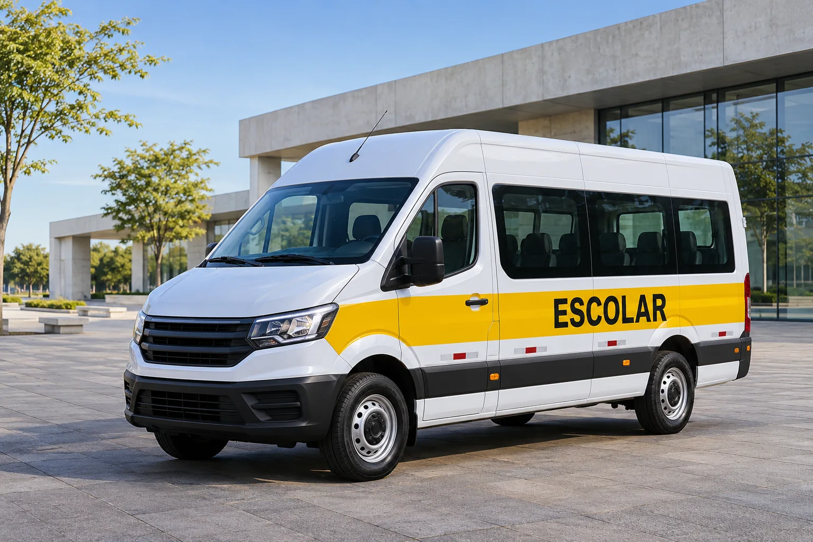
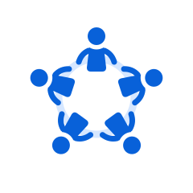

Uma rotina bem combinada
Alinhe os horários de entrada e saída, o ponto de encontro e as necessidades da sua família.

Por trás do volante, uma pessoa. Do outro lado, uma família confiando o que tem de mais importante.
Converse com quem cuida do trajeto, conheça seu jeito de trabalhar e tire suas dúvidas sobre a rotina entre casa e escola.
Para escolher quem acompanha seu filho, vale uma boa conversa. Começando pelos detalhes que fazem diferença na rotina.
Alinhe os horários de entrada e saída, o ponto de encontro e as necessidades da sua família.
Conheça quem vai conduzir e tire suas dúvidas diretamente antes de decidir.
Informe sua escola e seu bairro para consultar o trajeto e a disponibilidade de atendimento.
Da sua casa à escola, a nossa conversa começa pelo seu bairro.
Condução escolar em Belém do Pará. Conte onde você mora, qual é a escola e o turno para consultar a possibilidade de atendimento.
O mapa ilustra possíveis conexões pela cidade
Consulte o atendimento para o seu bairro
“A conversa antes de começar fez toda a diferença. Poder alinhar o trajeto e os horários trouxe mais tranquilidade para a nossa rotina.”
 Mariana A.
Mariana A.“O que mais valorizo é ter com quem falar diretamente. Essa proximidade ajuda muito na organização do dia a dia da família.”
 Rafael C.
Rafael C.“Conhecer o motorista e a van antes de combinar tudo me deixou mais à vontade. É um cuidado que faz diferença na escolha.”
 Camila S.
Camila S.Avaliações fictícias para ilustrar o layout — serão substituídas por relatos reais, com autorização das famílias

“A união faz a força”